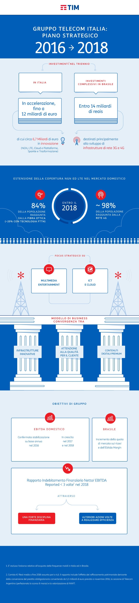

Our solution for businesses, midsize and small companies, public administration, moving on the rails of technological innovation that can increase productivity and efficiency.
We thought of the different needs of a diversified business as that of our country, creating advanced solutions, modular and customizable: fixed-mobile convergent tariff plans, IP communications, high-speed connectivity, a wide set of applications, such as management and data storage or monitoring of energy consumption, up to a powerful platform for cloud computing to virtualization of IT infrastructure and applications.
Tim Impresa Semplice is the name of the product offering for small and medium enterprises and clous Store a real digital marketplace, small and medium sized businesses can choose, buy and manage in a simple and immediate way the most advanced ICT proposals. The digital billing service, for example, a reality that the public administration and companies need to compete today, secure mobile signature, a new method to sign using their smartphone, instead of the classic devices such as smart card or tokens.
And again useful solution for the public administration in the path towardscost reduction, process efficiency and improvement of the relationship with the citizens, as the digital identity to convey the identity of the users safely through dedicated app -Trusted Identity- or next-generation SIM -Mobile Identity.
The following summarizes the key points of the Strategic Plan 2016-2018 presented to the Financial Community February 16, 2016.
